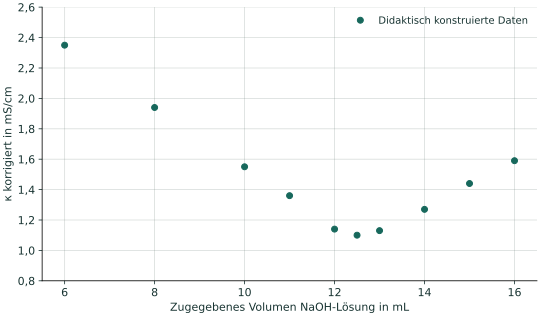

Kurze Orientierung: Wie belastbar ist ein Ergebnis?
Plausibilität: Passen Einheit, Größenordnung und Kurvenverlauf zur Aufgabe? Ein plausibler Wert kann trotzdem systematisch verschoben sein.
Grafische Auswertung: Die Daten streuen; außerdem sind die geraden Äste und ihr Schnittpunkt nicht beliebig genau festgelegt. Vergleiche mehrere vertretbare Geradenlagen. Daraus kannst du einen begründeten Bereich für VE abschätzen. Der kleinste einzelne Leitfähigkeitswert ist nicht automatisch der Äquivalenzpunkt.
Ergebnisstellen: Ein Taschenrechner kann mehr Nachkommastellen anzeigen, als die Daten tragen. Runde das Ergebnis passend zur angegebenen Unsicherheit und runde Zwischenrechnungen nicht unnötig früh.
Präzision und Richtigkeit: Eng beieinanderliegende Wiederholungswerte sprechen für geringe Streuung. Ob die Werte systematisch am richtigen Wert liegen, ist damit noch nicht belegt. Eine nur aus der Grafik geschätzte Unsicherheit erfasst zum Beispiel keine unerkannte mitreagierende Säure.
Hier genügt eine nachvollziehbare grafische Abschätzung. Es wird weder eine vollständige Messunsicherheitsrechnung noch ein statistisches Vertrauensintervall verlangt.
Ein Datensatz zur Beurteilung
Ausgewertet wird eine 25,00-mL-Salzsäureprobe mit NaOH-Lösung der Konzentration 0,1000 mol/L. Das gesamte Anfangsvolumen beträgt V₀ = 150,0 mL (25,00 mL ursprüngliche Probe plus zusätzliches Wasser). Die Volumenkorrektur bezieht sich auf dieses Anfangsvolumen. Temperaturänderungen werden ausgeschlossen. Die folgenden, leicht streuenden Modelldaten sind bereits volumenbereinigt. Im Übergangsbereich zwischen den linearen Ästen ist die Kurve gerundet.


| V(NaOH) in mL | κkorr in mS/cm |
|---|---|
| 6,0 | 2,35 |
| 8,0 | 1,94 |
| 10,0 | 1,55 |
| 11,0 | 1,36 |
| 12,0 | 1,14 |
| 12,5 | 1,10 |
| 13,0 | 1,13 |
| 14,0 | 1,27 |
| 15,0 | 1,44 |
| 16,0 | 1,59 |
A · Auswertungen vergleichen
Wie viele Stellen sind begründbar?
| Auswertung | Aussage |
|---|---|
| A | „Der kleinste Messwert liegt bei 12,5 mL. Daher ist VE exakt 12,50000 mL.“ |
| B | „Aus vertretbaren Geradenlagen ergibt sich ungefähr 12,4 bis 12,8 mL. Ich gebe VE ≈ (12,6 ± 0,2) mL als grafische Abschätzung an.“ |
| C | „Mein Geradenschnitt liefert rechnerisch 12,58742 mL. Jede dieser Stellen ist experimentell gesichert.“ |
- Beurteile alle drei Aussagen anhand der Grafik und der Daten.
- Begründe, warum die Punkte im gerundeten Übergang nicht als alleinige Grundlage für die geraden Äste dienen sollten.
- Welche Bedeutung hat das ±0,2 mL in Auswertung B? Was bedeutet es ausdrücklich nicht?
A · Hilfe 1: Messwert und Modell unterscheiden
Ein Messwert liegt bei einem ausgewählten Zugabevolumen. Der gesuchte Schnittpunkt zweier linearer Äste kann zwischen diesen Volumina liegen. Vergleiche die Zahl der angegebenen Stellen mit der Streuung und dem gerundeten Übergang.
A · Hilfe 2: Ein Bereich braucht eine Begründung
Für den fallenden Ast helfen mehrere Punkte vor dem Übergang, für den steigenden Ast die Punkte danach. Kleine noch vertretbare Änderungen der Geradenlage verschieben ihren Schnittpunkt. Das Intervall beschreibt diese grafische Abschätzung, ohne eine statistische Wahrscheinlichkeit festzulegen.
A · Musterlösung
A ist nicht begründet. Der tiefste aufgenommene Punkt kennzeichnet zunächst nur das Minimum der vorliegenden Einzelwerte. Wegen Messabständen, Streuung und Abrundung folgt daraus kein exakter Äquivalenzpunkt. Die vielen Nullen behaupten eine nicht vorhandene Genauigkeit.
B ist unter den angegebenen Bedingungen eine angemessene Abschätzung. Der Bereich liegt dort, wo sich Verlängerungen der fallenden und steigenden Äste treffen können. Die ±0,2 mL entsprechen der halben Breite des angesetzten Bereichs 12,4 bis 12,8 mL. Eine eigene grafische Auswertung darf leicht abweichen, wenn Geradenwahl und Bereich nachvollziehbar begründet sind.
C verwechselt Rechenstellen mit experimenteller Absicherung. Ein Schnittpunkt kann mit vielen Stellen berechnet werden, obwohl die Wahl der Geraden ihn merklich verändert. Der Rechner beseitigt diese Unsicherheit nicht.
Für die Äste bieten sich beispielsweise die Bereiche 6 bis 11 mL und 14 bis 16 mL an. Die gerundeten Werte dazwischen folgen nicht den jeweiligen linearen Trends. Wer nur sie verbindet, bestimmt eine andere Steigung und kann den Schnittpunkt verschieben.
Das Intervall in B ist kein Nachweis eines exakten wahren Wertes, kein 95-%-Vertrauensintervall und keine vollständige Messunsicherheit. Es beschreibt hier ausschließlich die begründete grafische Auswertung.
B · Ergebnisbereich berechnen
Was folgt für die Konzentration?
Verwende für diese Aufgabe den Bereich 12,4 ≤ VE ≤ 12,8 mL mit dem mittleren Ansatz 12,6 mL. Betrachte die Unsicherheiten von c(NaOH) und Probenvolumen gegenüber dieser grafischen Abschätzung vereinfachend als vernachlässigbar.
- Berechne die Salzsäurekonzentration für 12,6 mL.
- Berechne den Konzentrationsbereich für die beiden Volumengrenzen.
- Gib das Ergebnis mit einer passenden Anzahl an Stellen und seiner grafischen Abschätzung an. Beurteile die Behauptung: „c = 0,05034968 mol/L ist grundsätzlich besser als eine kürzere Angabe.“
B · Hilfe 1: Die Abhängigkeit nutzen
Bei der Reaktion gilt n(HCl) = n(NaOH). Deshalb ist c(HCl) = c(NaOH) · VE/VProbe. Da die anderen Größen festgehalten werden, wächst die berechnete Konzentration proportional zu VE.
B · Hilfe 2: Zweimal die gleiche Rechnung
Setze erst 12,4 mL und dann 12,8 mL ein. Wenn beide Volumina in derselben Einheit stehen, kürzen sich ihre Einheiten im Quotienten. Die halbe Breite des resultierenden Bereichs ist hier die passende grafische Abschätzung für c.
B · Musterlösung und Selbstkontrolle
= 0,0504 mol/L
Mit 12,4 mL ergibt sich 0,0496 mol/L, mit 12,8 mL 0,0512 mol/L. Der Bereich hat die halbe Breite (0,0512 − 0,0496)/2 = 0,0008 mol/L.
nur grafische Abschätzung unter den Aufgabenannahmen
Ebenso möglich ist (50,4 ± 0,8) mmol/L. Die relative halbe Bereichsbreite beträgt rund 1,6 %. Die Zahlenstellen von Ergebnis und Abschätzung enden an derselben Dezimalstelle.
0,05034968 mol/L ist hier keine besser abgesicherte Aussage: Die zusätzlichen Ziffern sind gegenüber einem Bereich von ±0,0008 mol/L nicht belastbar. Ein anderer vertretbarer Geradenschnitt kann einen etwas anderen Zentralwert liefern. Entscheidend sind nachvollziehbare Auswertung und Ergebnisbereich.
Beziehst du die Konzentration auf 25,00 mL ursprüngliche Probe? Steht bei deinem Ergebnis, welche Unsicherheit abgeschätzt wurde?
C · Daten und Aussagen prüfen
Plausibel, präzise oder richtig?
- In einer Abschrift dieses Datensatzes steht bei 8,0 mL versehentlich 19,4 mS/cm statt 1,94 mS/cm. Wie würdest du den Wert anhand der übrigen Daten beurteilen? Begründe, warum man einen auffälligen Wert nicht ohne weitere Prüfung passend machen darf.
- Vier Auswertungen einer anderen Probe ergeben 0,0503; 0,0504; 0,0504 und 0,0505 mol/L. Jemand folgert: „Damit ist bewiesen, dass die Zielstoffkonzentration 0,0504 mol/L beträgt.“ Was zeigen die Werte, und was bleibt offen?
C · Hilfe
Vergleiche bei 1 den Wert mit seinen Nachbarn und dem erwarteten Kurvenverlauf. Bei 2: Könnte eine unberücksichtigte weitere Säure bei jeder Wiederholung wieder Maßlösung verbrauchen?
C · Musterlösung
Zum auffälligen Wert: 19,4 mS/cm passt weder zur Größenordnung der Nachbarwerte noch zum ansonsten fallenden Ast. Ein Faktor-10-Fehler bei Zahl oder Einheit ist ein begründeter Verdacht. Im vorliegenden Fall lässt sich der Übertragungsfehler durch Vergleich mit der ursprünglichen Tabelle belegen. Ohne diese Information wäre die Ursache offen: Originaldaten und Einheiten müssten geprüft werden; der Wert dürfte nicht allein deshalb umgeschrieben oder gelöscht werden, damit die Kurve besser aussieht.
Zu den Wiederholungen: Die Werte streuen wenig und sprechen für eine gute Präzision unter diesen Bedingungen. Daraus folgt noch kein Nachweis der Richtigkeit oder der eindeutigen Bestimmung des Zielstoffs. Beispielsweise könnte eine weitere Säure bei allen Wiederholungen mitbestimmt werden und die Zuordnung zum Zielstoff systematisch erhöhen (6.2). Ein sorgfältig bestimmter kleiner Streubereich erfasst eine solche unerkannte Ursache nicht automatisch.
Für ein Urteil müssen deshalb sowohl die Datenqualität als auch die chemische Zuordnung und die Rechnung stimmen. Die Anzahl der Nachkommastellen allein bewertet keine dieser drei Fragen zuverlässig.
Zurück zur Checkliste
Kannst du ein Ergebnis mit Einheit und begründetem Bereich angeben und erklären, was die Daten über seine Plausibilität, Streuung und mögliche systematische Abweichungen aussagen?
Fachliche Quellen und Modellgrenzen
- JCGM/BIPM, International Vocabulary of Metrology: Messgenauigkeit (2.13), Präzision (2.15) und Messunsicherheit (2.26).
- NIST: GLP 9 – Rounding Expanded Uncertainties and Calibration Values, 2019: Ergebnis und Unsicherheitsangabe auf zueinander passende Dezimalstellen runden.
- Tel Aviv University: Conductometric Titrations: grafische Bestimmung und Einfluss der Kurvenäste.
Der vorgegebene Bereich 12,4 bis 12,8 mL dient einer schulischen grafischen Abschätzung. Er wurde nicht aus einer statistischen Regression mit festgelegter Überdeckungswahrscheinlichkeit berechnet. Die Aufgaben verlangen keine Anwendung der weiterführenden metrologischen Verfahren in den Quellen.
Aufgaben, Zahlenbeispiele, Diagramme und Musterlösungen wurden für dieses Lernangebot entwickelt. Die Datensätze sind didaktische Modelle, keine Versuchsmessungen.